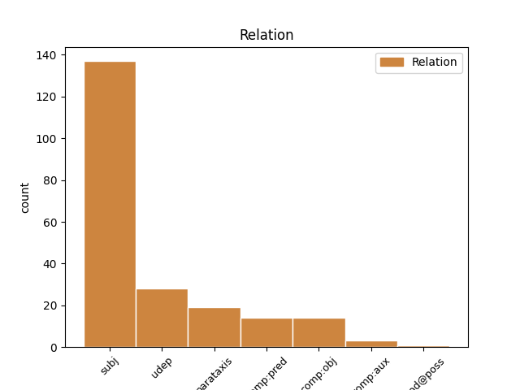
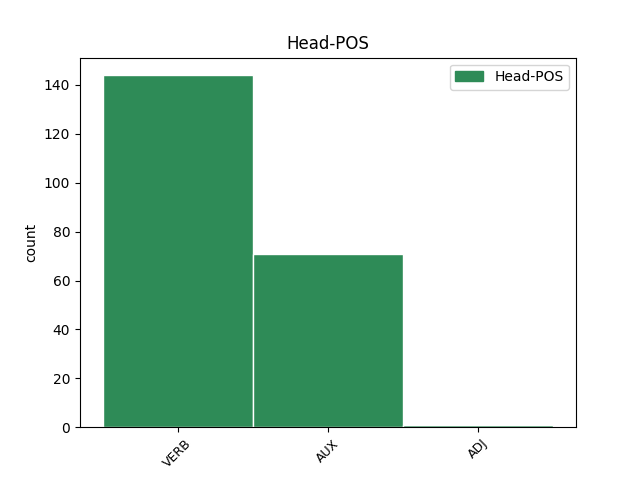
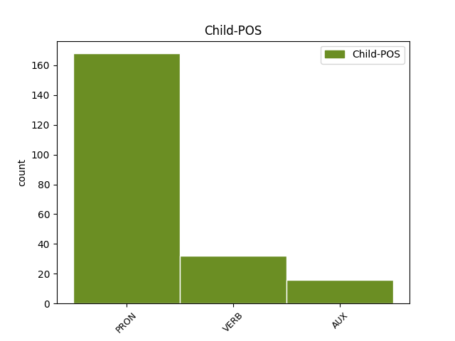

Distribution of features within this leaf



Agreement Rules sorted by frequency.
- When the dependent token is the subject(subj) of the head token, and the head token is VERB and the dependent token is PRON.
1 بىر _ _ _ _ 0 _ _ _
2 ئايال _ _ _ _ 0 _ _ _
3 دوختۇر _ _ _ _ 0 _ _ _
4 ئەگەر _ _ _ _ 0 _ _ _
5 ئۇلار ئۇلار PRON P Case=Nom|Number=Plur|Person=3|PronType=Prs 7 subj _ Translit=ular
6 قان _ _ _ _ 0 _ _ _
7 بەرمىسە بەر VERB V Mood=Cnd|Number=Plur|Person=3|Polarity=Neg|VerbForm=Conv 0 _ _ _
8 ، _ _ _ _ 0 _ _ _
9 قىزچاقنىڭ _ _ _ _ 0 _ _ _
10 ئۆلۈپ _ _ _ _ 0 _ _ _
11 كېتىدىغانلىقىنى _ _ _ _ 0 _ _ _
12 بۇ _ _ _ _ 0 _ _ _
13 بالىلارغا _ _ _ _ 0 _ _ _
14 ئېيتىپ _ _ _ _ 0 _ _ _
15 ، _ _ _ _ 0 _ _ _
16 قان _ _ _ _ 0 _ _ _
17 بېرىشنى _ _ _ _ 0 _ _ _
18 خالايدىغانلارنىڭ _ _ _ _ 0 _ _ _
19 بار-يوقلۇقىنى _ _ _ _ 0 _ _ _
20 سوراپتۇ _ _ _ _ 0 _ _ _
21 . _ _ _ _ 0 _ _ _
1 - _ _ _ _ 0 _ _ _
2 بىز بىز PRON P Case=Nom|Number=Plur|Person=1|PronType=Prs 7 subj _ Translit=biz
3 بۇ _ _ _ _ 0 _ _ _
4 تاغقا _ _ _ _ 0 _ _ _
5 كۈندە _ _ _ _ 0 _ _ _
6 چىقىپ _ _ _ _ 0 _ _ _
7 تۇرىمىز تۇر AUX V Mood=Ind|Number=Plur|Person=1|Tense=Aor|VerbForm=Fin 0 _ _ _
8 ، _ _ _ _ 0 _ _ _
1 ئۇ _ _ _ _ 0 _ _ _
2 ئويغاندى ئويغان VERB V Mood=Ind|Number=Sing|Person=3|Tense=Past|VerbForm=Fin 7 parataxis _ SpaceAfter=No|Translit=oyghandi
3 ، _ _ _ _ 0 _ _ _
4 قاراڭلار _ _ _ _ 0 _ _ _
5 ، _ _ _ _ 0 _ _ _
6 ئۇ _ _ _ _ 0 _ _ _
7 ئويغاندى ئويغان VERB V Mood=Ind|Number=Sing|Person=3|Tense=Past|VerbForm=Fin 0 _ _ _
8 ! _ _ _ _ 0 _ _ _
1 - _ _ _ _ 0 _ _ _
2 ۋۇي _ _ _ _ 0 _ _ _
3 ، _ _ _ _ 0 _ _ _
4 ساڭا سەن PRON P Case=Dat|Number=Sing|Person=2|PronType=Prs 6 udep _ Translit=sanga
5 نېمە _ _ _ _ 0 _ _ _
6 بولدى بول VERB V Mood=Ind|Number=Sing|Person=3|Tense=Past|VerbForm=Fin 0 _ _ _
7 ؟ _ _ _ _ 0 _ _ _
1 بەزى _ _ _ _ 0 _ _ _
2 ئوقۇتقۇچىلار _ _ _ _ 0 _ _ _
3 ئۇنى ئۇ PRON P Case=Acc|Number=Sing|Person=3|PronType=Prs 7 comp:obj _ Translit=uni
4 رەسۋا _ _ _ _ 0 _ _ _
5 تىللار _ _ _ _ 0 _ _ _
6 بىلەن _ _ _ _ 0 _ _ _
7 تىللىدى تىللى VERB V Mood=Ind|Number=Sing|Person=3|Tense=Past|VerbForm=Fin 0 _ _ _
8 . _ _ _ _ 0 _ _ _
1 ئەگەر _ _ _ _ 0 _ _ _
2 قۇياشقا _ _ _ _ 0 _ _ _
3 چىقماقچى _ _ _ _ 0 _ _ _
4 بولۇپ _ _ _ _ 0 _ _ _
5 كېچە-كۈندۈز _ _ _ _ 0 _ _ _
6 توختىماي _ _ _ _ 0 _ _ _
7 پىيادە _ _ _ _ 0 _ _ _
8 ماڭىدىغان _ _ _ _ 0 _ _ _
9 بولساق بول AUX V Mood=Cnd|Number=Sing|Person=1|VerbForm=Conv 14 udep _ SpaceAfter=No|Translit=bolsaq
10 ، _ _ _ _ 0 _ _ _
11 3500 _ _ _ _ 0 _ _ _
12 يىل _ _ _ _ 0 _ _ _
13 ۋاقىت _ _ _ _ 0 _ _ _
14 كېتىدۇ كەت VERB V Mood=Ind|Number=Sing|Person=3|Tense=Aor|VerbForm=Fin 0 _ _ _
15 ؛ _ _ _ _ 0 _ _ _
1 گالىلېي _ _ _ _ 0 _ _ _
2 تەجرىبىنى _ _ _ _ 0 _ _ _
3 توختىتىشنى _ _ _ _ 0 _ _ _
4 رەت _ _ _ _ 0 _ _ _
5 قىلدى قىل VERB V Mood=Ind|Number=Sing|Person=3|Tense=Past|VerbForm=Fin 12 parataxis _ SpaceAfter=No|Translit=qildi
6 ، _ _ _ _ 0 _ _ _
7 شۇڭا _ _ _ _ 0 _ _ _
8 ئۇلار _ _ _ _ 0 _ _ _
9 تەھدىتنى _ _ _ _ 0 _ _ _
10 ئەمەلدە _ _ _ _ 0 _ _ _
11 كۆرسەتمەكچى _ _ _ _ 0 _ _ _
12 بولدى بول AUX V Mood=Ind|Number=Sing|Person=3|Tense=Past|VerbForm=Fin 0 _ _ _
13 . _ _ _ _ 0 _ _ _
1 ئەدەپ–ئەخلاق _ _ _ _ 0 _ _ _
2 ئۆگەنسۇن _ _ _ _ 0 _ _ _
3 ، _ _ _ _ 0 _ _ _
4 دەپ _ _ _ _ 0 _ _ _
5 مەشرەپكە _ _ _ _ 0 _ _ _
6 ئەكەلدىم ئەكەل VERB V Mood=Ind|Number=Sing|Person=1|Tense=Past|VerbForm=Fin 10 comp:obj _ SpaceAfter=No|Translit=ekeldim
7 . _ _ _ _ 0 _ _ _
8 › _ _ _ _ 0 _ _ _
9 › _ _ _ _ 0 _ _ _
10 دەيدۇ دە VERB V Mood=Ind|Number=Sing|Person=3|Tense=Aor|VerbForm=Fin 0 _ _ _
11 . _ _ _ _ 0 _ _ _
1 شۇ _ _ _ _ 0 _ _ _
2 تاپتا _ _ _ _ 0 _ _ _
3 دادام _ _ _ _ 0 _ _ _
4 ماڭا مەن PRON P Case=Dat|Number=Sing|Person=1|PronType=Prs 9 udep _ Translit=manga
5 رىۋايەتلەردىكى _ _ _ _ 0 _ _ _
6 باتۇرلاردەك _ _ _ _ 0 _ _ _
7 ھەيۋەتلىك _ _ _ _ 0 _ _ _
8 كۆرۈنمەكتە _ _ _ _ 0 _ _ _
9 ئىدى ئى AUX V Mood=Ind|Number=Sing|Person=3|Tense=Past|VerbForm=Fin 0 _ _ _
10 . _ _ _ _ 0 _ _ _
1 بۇ _ _ _ _ 0 _ _ _
2 قېتىم _ _ _ _ 0 _ _ _
3 قويچى _ _ _ _ 0 _ _ _
4 بالا _ _ _ _ 0 _ _ _
5 ” _ _ _ _ 0 _ _ _
6 بۆرە _ _ _ _ 0 _ _ _
7 كەلدى _ _ _ _ 0 _ _ _
8 ! _ _ _ _ 0 _ _ _
9 بۆرە _ _ _ _ 0 _ _ _
10 كەلدى _ _ _ _ 0 _ _ _
11 ! _ _ _ _ 0 _ _ _
12 “ _ _ _ _ 0 _ _ _
13 دەپ _ _ _ _ 0 _ _ _
14 جان-جەھلى _ _ _ _ 0 _ _ _
15 بىلەن _ _ _ _ 0 _ _ _
16 توۋلىغان توۋلى VERB V Mood=Ind|Number=Sing|Person=3|Tense=Past|VerbForm=Fin 17 comp:pred _ Translit=towlighan
17 بولسىمۇ بول AUX V Mood=Cnd|Number=Sing|Person=3|VerbForm=Conv 0 _ _ _
18 ، _ _ _ _ 0 _ _ _
19 كىشىلەر _ _ _ _ 0 _ _ _
20 ، _ _ _ _ 0 _ _ _
21 ئۇ _ _ _ _ 0 _ _ _
22 يەنە _ _ _ _ 0 _ _ _
23 بىزنى _ _ _ _ 0 _ _ _
24 ئالداۋاتىدۇ _ _ _ _ 0 _ _ _
25 ، _ _ _ _ 0 _ _ _
26 دەپ _ _ _ _ 0 _ _ _
27 ئويلاپ _ _ _ _ 0 _ _ _
28 تاغقا _ _ _ _ 0 _ _ _
29 چىقماپتۇ _ _ _ _ 0 _ _ _
30 . _ _ _ _ 0 _ _ _
1 ئۇ _ _ _ _ 0 _ _ _
2 تىرىشچان _ _ _ _ 0 _ _ _
3 ، _ _ _ _ 0 _ _ _
4 ئاقكۆڭۈل _ _ _ _ 0 _ _ _
5 ، _ _ _ _ 0 _ _ _
6 ساددا _ _ _ _ 0 _ _ _
7 مىجەز _ _ _ _ 0 _ _ _
8 كەشپىياتچىمىزنىڭ _ _ _ _ 0 _ _ _
9 ئاددىي _ _ _ _ 0 _ _ _
10 بىر _ _ _ _ 0 _ _ _
11 ئائىلىدە _ _ _ _ 0 _ _ _
12 ، _ _ _ _ 0 _ _ _
13 ئاددىي _ _ _ _ 0 _ _ _
14 شارائىتتا _ _ _ _ 0 _ _ _
15 بۇنداق _ _ _ _ 0 _ _ _
16 ئالەمشۇمۇل _ _ _ _ 0 _ _ _
17 كەشپىياتلارنى _ _ _ _ 0 _ _ _
18 روياپقا _ _ _ _ 0 _ _ _
19 چىقىرىشىنى _ _ _ _ 0 _ _ _
20 تۇنجى _ _ _ _ 0 _ _ _
21 ئاڭلىغاندا _ _ _ _ 0 _ _ _
22 سىز سىز PRON P Case=Nom|Number=Sing|Person=2|Polite=Form|PronType=Prs 23 comp:pred _ Translit=siz
23 ئەمەس ئى AUX V Number=Sing|Person=3|Polarity=Neg 0 _ _ _
24 مەنمۇ _ _ _ _ 0 _ _ _
25 ئىشەنمىگەن _ _ _ _ 0 _ _ _
26 . _ _ _ _ 0 _ _ _
1 كىيىم _ _ _ _ 0 _ _ _
2 ئۇلار _ _ _ _ 0 _ _ _
3 ئۈچۈن _ _ _ _ 0 _ _ _
4 خاراكتېردىكى _ _ _ _ 0 _ _ _
5 ئاجىزلىقنى _ _ _ _ 0 _ _ _
6 بېزەيدىغان _ _ _ _ 0 _ _ _
7 ئالامەت _ _ _ _ 0 _ _ _
8 ئەمەس ئى AUX V Number=Sing|Person=3|Polarity=Neg 9 comp:pred _ Translit=emes
9 ئىدى ئى AUX V Mood=Ind|Number=Sing|Person=3|Tense=Past|VerbForm=Fin 0 _ _ _
10 ، _ _ _ _ 0 _ _ _
1 بۇ _ _ _ _ 0 _ _ _
2 يەردە _ _ _ _ 0 _ _ _
3 گېزىت _ _ _ _ 0 _ _ _
4 ئوقۇپ _ _ _ _ 0 _ _ _
5 ئولتۇرغان ئولتۇر VERB V Mood=Ind|Number=Sing|Person=3|Tense=Past|VerbForm=Fin 6 comp:aux _ Translit=olturghan
6 بولسىڭىز بول AUX V Mood=Cnd|Number=Sing|Person=2|VerbForm=Conv 0 _ _ _
7 . _ _ _ _ 0 _ _ _
1 ئۇنى _ _ _ _ 0 _ _ _
2 ئوقۇشنى _ _ _ _ 0 _ _ _
3 بىلسەڭ _ _ _ _ 0 _ _ _
4 ، _ _ _ _ 0 _ _ _
5 مەن _ _ _ _ 0 _ _ _
6 ئېيتقانلارنىلا _ _ _ _ 0 _ _ _
7 ئەمەس _ _ _ _ 0 _ _ _
8 ، _ _ _ _ 0 _ _ _
9 يەنە _ _ _ _ 0 _ _ _
10 قەيەردە _ _ _ _ 0 _ _ _
11 كۆمۈر _ _ _ _ 0 _ _ _
12 ، _ _ _ _ 0 _ _ _
13 قەيەردە _ _ _ _ 0 _ _ _
14 تۆمۈر _ _ _ _ 0 _ _ _
15 كېنى _ _ _ _ 0 _ _ _
16 بار _ _ _ _ 0 _ _ _
17 . _ _ _ _ 0 _ _ _
18 . _ _ _ _ 0 _ _ _
19 . _ _ _ _ 0 _ _ _
20 دېگەنلەرنى _ _ _ _ 0 _ _ _
21 بىلەلەيسەن _ _ _ _ 0 _ _ _
22 . _ _ _ _ 0 _ _ _
23 ئۇ ئۇ PRON P Case=Nom|Number=Sing|Person=3|PronType=Prs 24 comp:pred _ Translit=u
24 دېگەن دې VERB V Mood=Ind|Number=Sing|Person=3|Tense=Past|VerbForm=Fin 0 _ _ _
25 زور _ _ _ _ 0 _ _ _
26 بايلىقنىڭ _ _ _ _ 0 _ _ _
27 ئاچقۇچى _ _ _ _ 0 _ _ _
28 ! _ _ _ _ 0 _ _ _
1 سەن _ _ _ _ 0 _ _ _
2 بىزگە _ _ _ _ 0 _ _ _
3 ئاكا _ _ _ _ 0 _ _ _
4 ئىدىڭ ئى AUX V Mood=Ind|Number=Sing|Person=2|Tense=Past|VerbForm=Fin 10 parataxis _ SpaceAfter=No|Translit=iding
5 ، _ _ _ _ 0 _ _ _
6 لېكىن _ _ _ _ 0 _ _ _
7 سەن _ _ _ _ 0 _ _ _
8 بىزگە _ _ _ _ 0 _ _ _
9 ئاتىمۇ _ _ _ _ 0 _ _ _
10 بولدۇڭ بول AUX V Mood=Ind|Number=Sing|Person=2|Tense=Past|VerbForm=Fin 0 _ _ _
11 . _ _ _ _ 0 _ _ _
1 < _ _ _ _ 0 _ _ _
2 ھەي _ _ _ _ 0 _ _ _
3 ، _ _ _ _ 0 _ _ _
4 بىر _ _ _ _ 0 _ _ _
5 مىنۇت _ _ _ _ 0 _ _ _
6 بالدۇر _ _ _ _ 0 _ _ _
7 ماڭغان ماڭ VERB V Mood=Ind|Number=Sing|Person=3|Tense=Past|VerbForm=Fin 8 comp:pred _ Translit=mangghan
8 بولسامچۇ بول VERB N Mood=Cnd|Number=Sing|Person=1|VerbForm=Conv 0 _ _ _
9 ! _ _ _ _ 0 _ _ _
10 > _ _ _ _ 0 _ _ _
11 دېدى _ _ _ _ 0 _ _ _
12 ئۇ _ _ _ _ 0 _ _ _
13 قاتتىق _ _ _ _ 0 _ _ _
14 تېرىكىپ _ _ _ _ 0 _ _ _
15 . _ _ _ _ 0 _ _ _
1 ئالتۇن _ _ _ _ 0 _ _ _
2 كاسىسىمۇ _ _ _ _ 0 _ _ _
3 ، _ _ _ _ 0 _ _ _
4 ساپال _ _ _ _ 0 _ _ _
5 قاچىسىمۇ _ _ _ _ 0 _ _ _
6 يوق _ _ _ _ 0 _ _ _
7 كىشىلەر _ _ _ _ 0 _ _ _
8 بولسا بول AUX V Mood=Cnd|Number=Sing|Person=3|VerbForm=Conv 11 subj _ Translit=bolsa
9 قوللىرىدا _ _ _ _ 0 _ _ _
10 ئۇچۇملاپ _ _ _ _ 0 _ _ _
11 ئىچىدۇ ئىچ VERB V Mood=Ind|Number=Sing|Person=3|Tense=Aor|VerbForm=Fin 0 _ _ _
12 . _ _ _ _ 0 _ _ _
1 ئەگەر _ _ _ _ 0 _ _ _
2 توغرا _ _ _ _ 0 _ _ _
3 بولىدىغان _ _ _ _ 0 _ _ _
4 بولسا بول AUX V Mood=Cnd|Number=Sing|Person=3|VerbForm=Conv 8 udep _ Translit=bolsa
5 بىر _ _ _ _ 0 _ _ _
6 مۆجىزىنى _ _ _ _ 0 _ _ _
7 بايقىغان _ _ _ _ 0 _ _ _
8 بولىدۇ بول AUX V Mood=Ind|Number=Sing|Person=3|Tense=Aor|VerbForm=Fin 0 _ _ _
9 . _ _ _ _ 0 _ _ _
1 ئىككى _ _ _ _ 0 _ _ _
2 تانىنىڭ _ _ _ _ 0 _ _ _
3 قوزغالغان _ _ _ _ 0 _ _ _
4 ئورنى _ _ _ _ 0 _ _ _
5 ئوخشاش _ _ _ _ 0 _ _ _
6 بولمىسىمۇ بول AUX V Mood=Cnd|Number=Sing|Person=3|Polarity=Neg|VerbForm=Conv 13 parataxis _ SpaceAfter=No|Translit=bolmisimu
7 ، _ _ _ _ 0 _ _ _
8 لېكىن _ _ _ _ 0 _ _ _
9 ئوخشاش _ _ _ _ 0 _ _ _
10 ۋاقىتتا _ _ _ _ 0 _ _ _
11 ئوخشاش _ _ _ _ 0 _ _ _
12 نۇقتىغا _ _ _ _ 0 _ _ _
13 يەتتى يەت VERB V Mood=Ind|Number=Sing|Person=3|Tense=Past|VerbForm=Fin 0 _ _ _
14 . _ _ _ _ 0 _ _ _
1 ئۇلارنىڭ ئۇلار PRON P Case=Gen|Number=Plur|Person=3|PronType=Prs 2 mod@poss _ Translit=ularning
2 بەزىلىرى بەزى ADJ P Case=Nom|Number=Plur|Number[psor]=Plur,Sing|Person[psor]=3 0 _ _ _
3 قىن-قىنىغا _ _ _ _ 0 _ _ _
4 پاتماي _ _ _ _ 0 _ _ _
5 چۆپلۈكتە _ _ _ _ 0 _ _ _
6 موللاق _ _ _ _ 0 _ _ _
7 ئېتىشاتتى _ _ _ _ 0 _ _ _
8 ، _ _ _ _ 0 _ _ _
1 سىرتقى _ _ _ _ 0 _ _ _
2 يۈزى _ _ _ _ 0 _ _ _
3 بولسا بول AUX V Mood=Cnd|Number=Sing|Person=3|VerbForm=Conv 8 subj _ Translit=bolsa
4 يارقىن _ _ _ _ 0 _ _ _
5 قۇياش _ _ _ _ 0 _ _ _
6 نۇرىغا _ _ _ _ 0 _ _ _
7 چۆمۈلگەن _ _ _ _ 0 _ _ _
8 ئىدى ئى AUX V Mood=Ind|Number=Sing|Person=3|Tense=Past|VerbForm=Fin 0 _ _ _
9 . _ _ _ _ 0 _ _ _
Disagree Examples:
1 ئېسىلزادە _ _ _ _ 0 _ _ _
2 خانىم _ _ _ _ 0 _ _ _
3 ئۇلارغا ئۇلار PRON P Case=Dat|Number=Plur|Person=3|PronType=Prs 6 udep _ Translit=ulargha
4 يۈز _ _ _ _ 0 _ _ _
5 سوم _ _ _ _ 0 _ _ _
6 بەردى بەر VERB V Mood=Ind|Number=Sing|Person=3|Tense=Past|VerbForm=Fin 0 _ _ _
7 . _ _ _ _ 0 _ _ _
1 ئاخشام _ _ _ _ 0 _ _ _
2 ناھايىتى _ _ _ _ 0 _ _ _
3 ئۇزاق _ _ _ _ 0 _ _ _
4 ئويلاپ _ _ _ _ 0 _ _ _
5 كەتتۇق كەت AUX V Mood=Ind|Number=Plur|Person=1|Tense=Past|VerbForm=Fin 8 comp:obj _ SpaceAfter=No|Translit=kettuq
6 ، _ _ _ _ 0 _ _ _
7 _ _ _ _ _ 0 _ _ _
8 دېدى دې VERB V Mood=Ind|Number=Sing|Person=3|Tense=Past|VerbForm=Fin 0 _ _ _
9 ئۇ _ _ _ _ 0 _ _ _
10 ، _ _ _ _ 0 _ _ _
1 سەنمۇ _ _ _ _ 0 _ _ _
2 شۇنداق _ _ _ _ 0 _ _ _
3 ، _ _ _ _ 0 _ _ _
4 سەندىمۇ _ _ _ _ 0 _ _ _
5 شۇنداق _ _ _ _ 0 _ _ _
6 بىر _ _ _ _ 0 _ _ _
7 قۇدرەت _ _ _ _ 0 _ _ _
8 بولمىغان بول VERB V Mood=Ind|Number=Plur|Person=3|Polarity=Neg|Tense=Past|VerbForm=Fin 9 comp:aux _ Translit=bolmighan
9 بولسا بول AUX V Mood=Cnd|Number=Sing|Person=3|VerbForm=Conv 0 _ _ _
10 ، _ _ _ _ 0 _ _ _
11 بىزنى _ _ _ _ 0 _ _ _
12 ئەتراپىڭغا _ _ _ _ 0 _ _ _
13 ئولاشتۇرالمىغان _ _ _ _ 0 _ _ _
14 بولاتتىڭ _ _ _ _ 0 _ _ _
15 . _ _ _ _ 0 _ _ _
1 سەن _ _ _ _ 0 _ _ _
2 خۇش _ _ _ _ 0 _ _ _
3 پۇرىقىڭ _ _ _ _ 0 _ _ _
4 بىلەن _ _ _ _ 0 _ _ _
5 ئۇلارغا ئۇلار PRON P Case=Dat|Number=Plur|Person=3|PronType=Prs 8 udep _ Translit=ulargha
6 بەھرە _ _ _ _ 0 _ _ _
7 بەرگۈچى _ _ _ _ 0 _ _ _
8 ئىدىڭ ئى AUX V Mood=Ind|Number=Sing|Person=2|Tense=Past|VerbForm=Fin 0 _ _ _
9 . _ _ _ _ 0 _ _ _
1 ھەر _ _ _ _ 0 _ _ _
2 قانداق _ _ _ _ 0 _ _ _
3 ئىشنىڭ _ _ _ _ 0 _ _ _
4 جاپاسى _ _ _ _ 0 _ _ _
5 سېنىڭ _ _ _ _ 0 _ _ _
6 ، _ _ _ _ 0 _ _ _
7 راھىتى _ _ _ _ 0 _ _ _
8 بىزنىڭ بىز PRON P Case=Gen|Number=Plur|Person=1|PronType=Prs 9 comp:pred _ Translit=bizning
9 بولدى بول AUX V Mood=Ind|Number=Sing|Person=3|Tense=Past|VerbForm=Fin 0 _ _ _
10 . _ _ _ _ 0 _ _ _